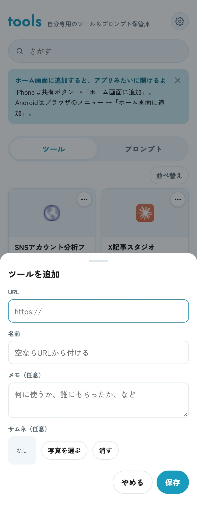
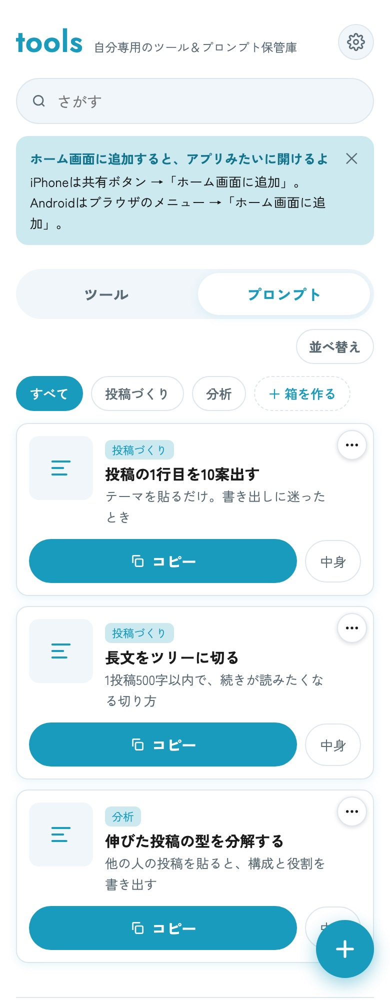
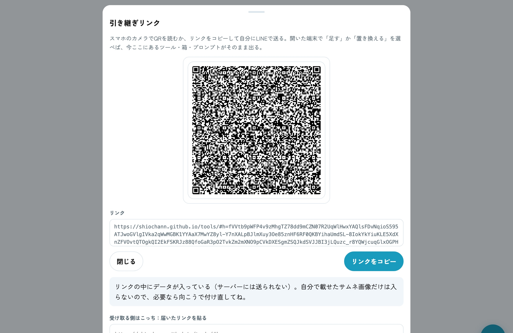
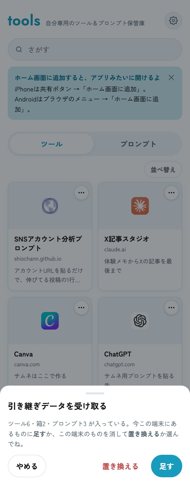

URLを貼るだけで、アイコンつきのカードになります。「誰にもらったか」「何に使うか」をメモに残せるので、あとで探さなくてすみます。
「投稿づくり」「分析」のように箱を作って、プロンプトを入れておけます。ボタンひとつでコピーして、ChatGPTやClaudeに貼るだけ。
「引き継ぎリンク」を使えば、パソコンで登録した中身をスマホに丸ごと出せます。QRを読むか、リンクを自分に送るだけです。
最初から入っているのは、無料配布中の「SNSアカウント分析プロンプト」のリンクだけ。あとは、あなたが持っているものを自由に足していってください。
スマホだけで完結します。パソコンでも同じ画面が開きます。
下の「toolsを開く」を押します。ログインや登録はありません。iPhoneの人は、LINEの中のブラウザではなくSafariで開くと、次の「ホーム画面に追加」ができます（LINEで開いたら、右下の共有ボタン → 「Safariで開く」）。
アプリみたいに開けるようになり、登録した中身も消えにくくなります。
以降は、ホーム画面の「tools」から開いてください。
右下の「＋」を押して、URLを貼ります。名前は空のままでも、URLから自動で付きます。「何に使うか」「誰にもらったか」をメモに残しておくと便利です。

上の「プロンプト」タブに切り替えて「＋」。本文を貼って保存すると、一覧に「コピー」ボタンつきで並びます。「＋ 箱を作る」で箱を作っておくと、用途ごとに分けられます。

登録した中身は端末ごとに別々です。同じものをもう一方にも出したいときは、画面いちばん下の「引き継ぎリンク（QR）」を使います。


いりません。リンクを開いた瞬間から使えます。AIも使っていないので、ChatGPTやClaudeの利用枠も消費しません。
かかりません。無料です。
端末ごとに別々に保存されるためです。パソコン側で「引き継ぎリンク（QR）」を押して、スマホのカメラでQRを読んでください。開いた画面で「足す」を押すと、そのまま出てきます。
「リンクをコピー」を押して、LINEのKeepメモなどで自分に送ってください。スマホでそのリンクを開けば、QRと同じことができます。
iPhoneでは、Safariとホーム画面のアプリで保存場所が別になります。届いたリンクを長押しでコピーして、ホーム画面の「tools」を開き、「引き継ぎリンク（QR）」のいちばん下「届いたリンクを貼る」に貼り付けて「読み込む」を押してください。
「足す」は、今ある中身を残したまま、届いたものを追加します（同じものは二重になりません）。「置き換える」は、今この端末にある中身を全部消して、届いたものだけにします。ふだんは「足す」で大丈夫です。
消したものは戻せません。「バックアップを書き出す」でファイルにしておくと、「読み込む」で戻せます。もう一方の端末に残っていれば、引き継ぎリンクで持ってくることもできます。
なりません。保管庫は開いた人のブラウザの中だけで動いていて、ほかの人の利用とは完全に別です。
入っていません。買っていない人もいるため、最初に入っているのは無料配布の「SNSアカウント分析プロンプト」のリンクだけです。お持ちのツールは、ご自身で「＋」から登録してください。
SHIO AI SCHOOL